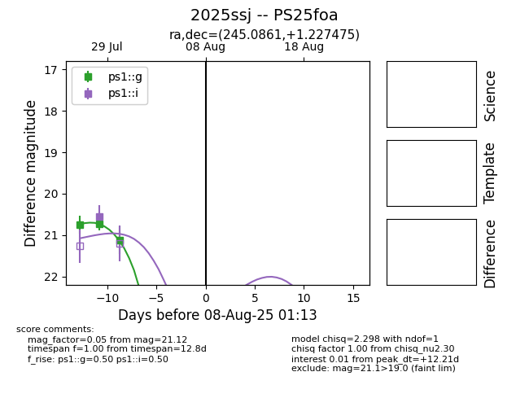

Target 2025ssj at 2025-08-08 03:29, see:
TNS: wis-tns.org/object/2025ssj
YSE: ziggy.ucolick.org/yse/transient_detail/2025ssj
alt names
2025ssj (yse,tns)
PS25foa (panstarrs)
coordinates:
equatorial (ra, dec) = (245.0861,+1.22748)
galactic (l, b) = (14.7087,+33.69666)
photometry
last ps1::g=21.12, ps1::i=20.55
3 ps1::g, 1 ps1::i detections
